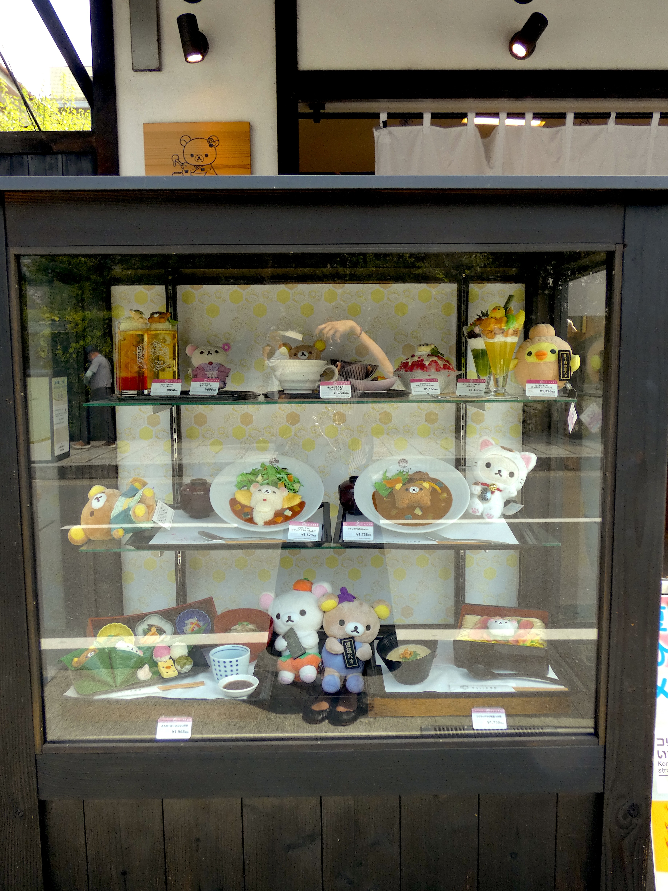
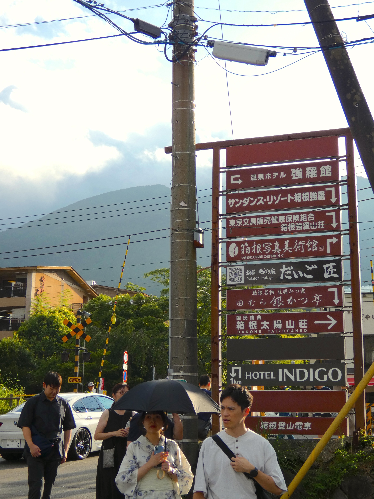
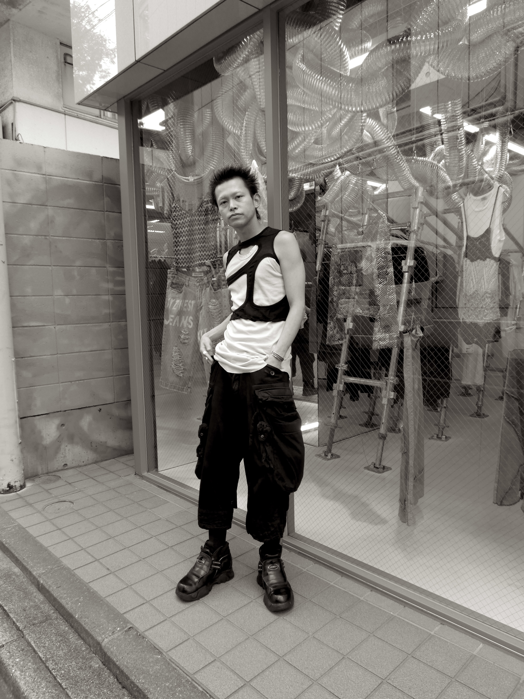
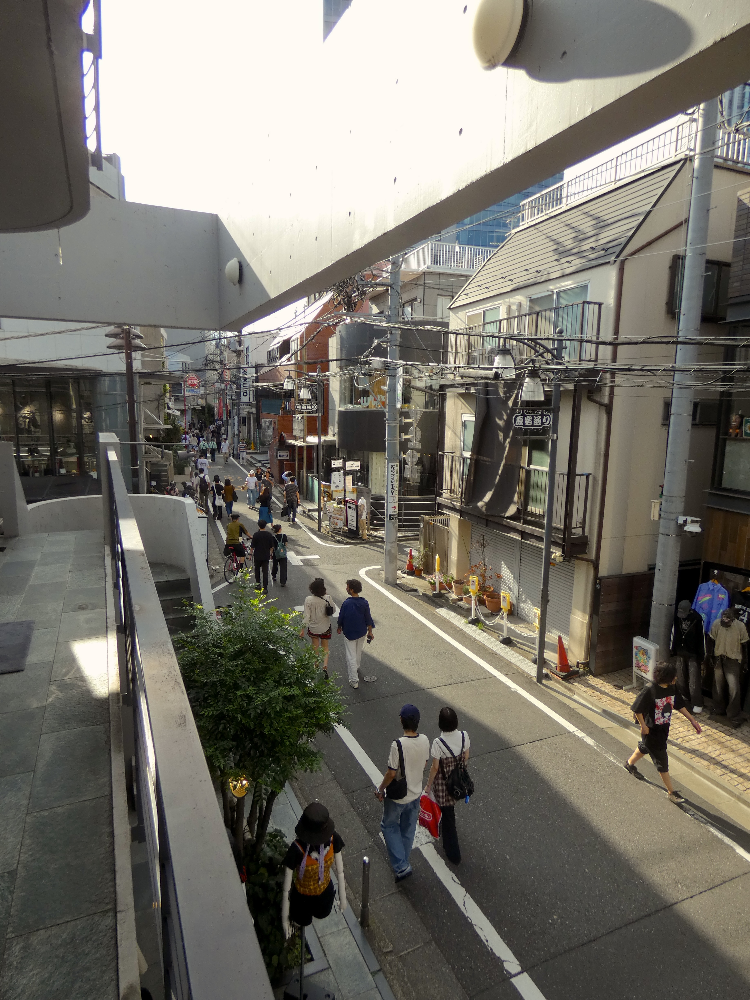
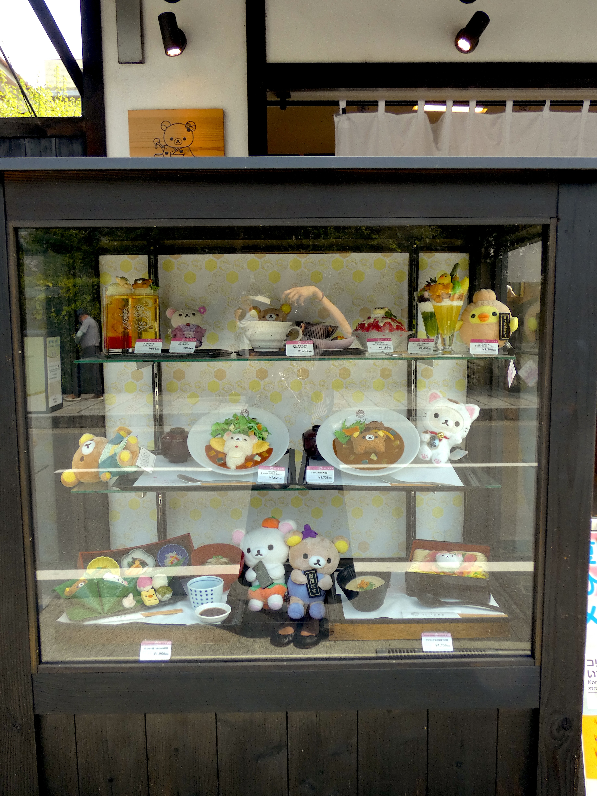
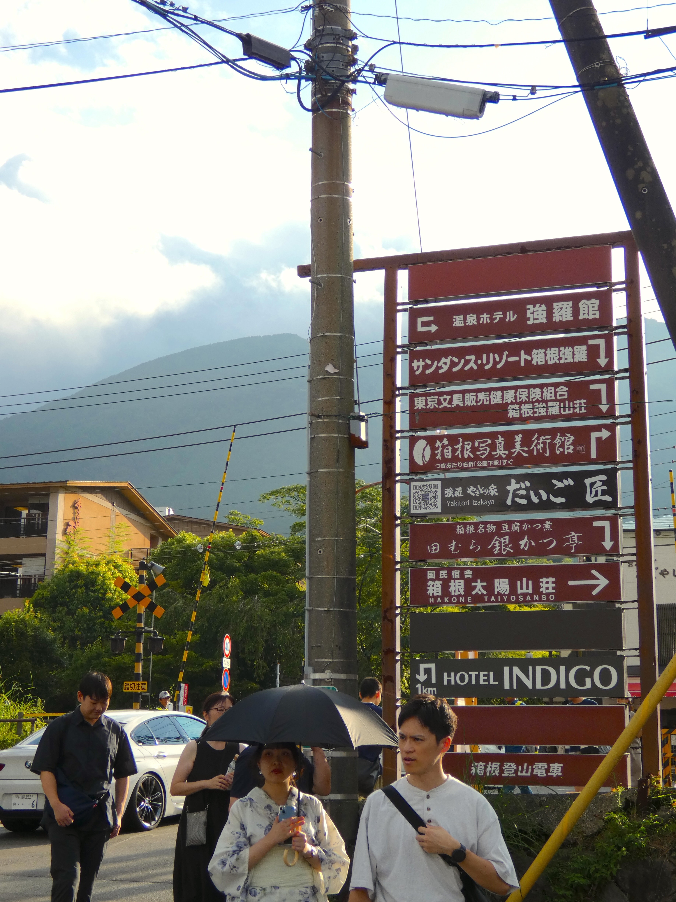
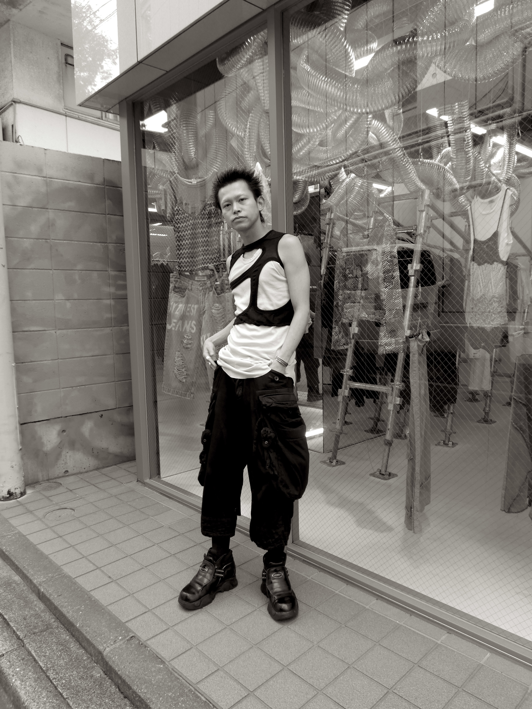
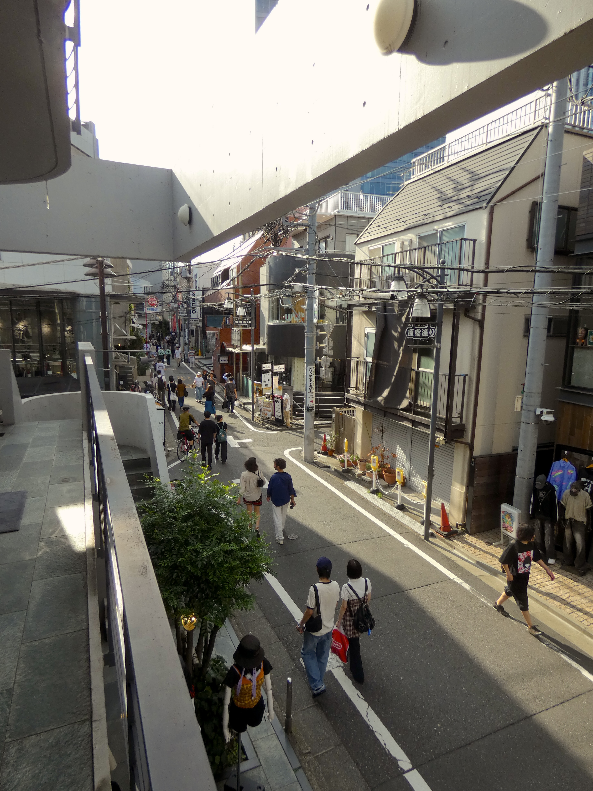
 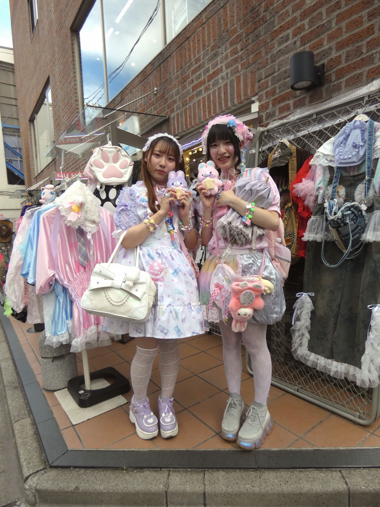
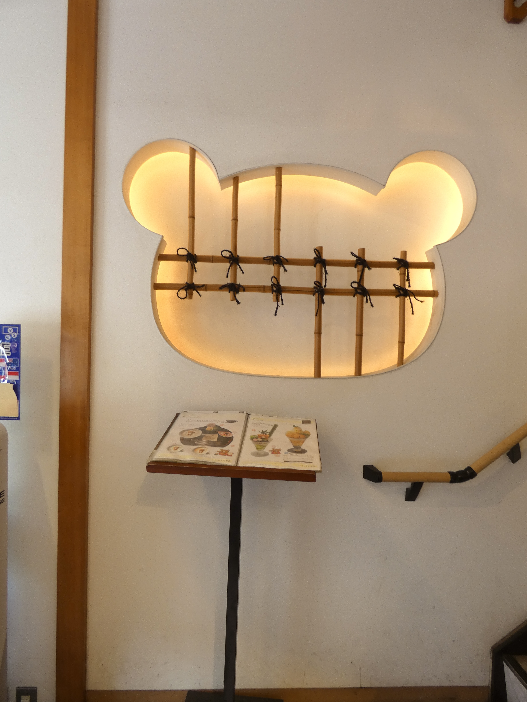
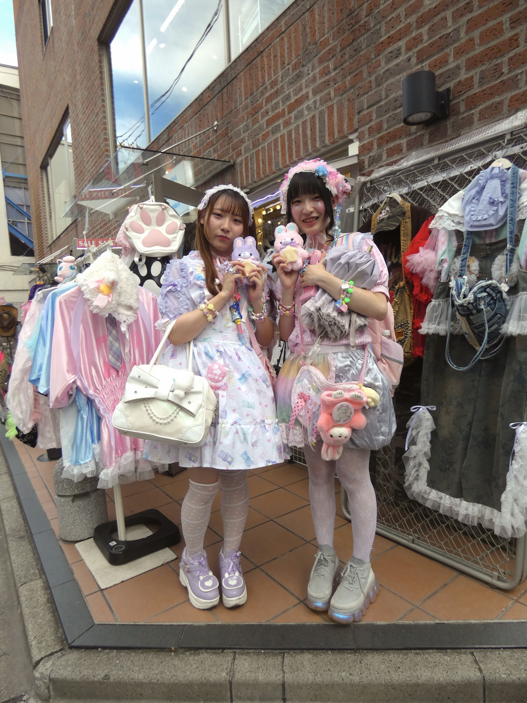
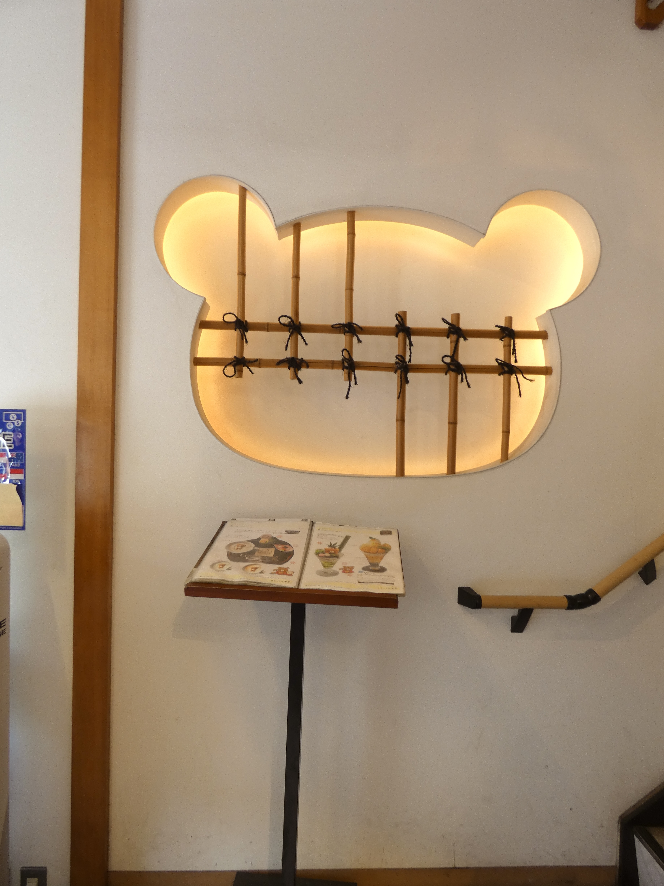

 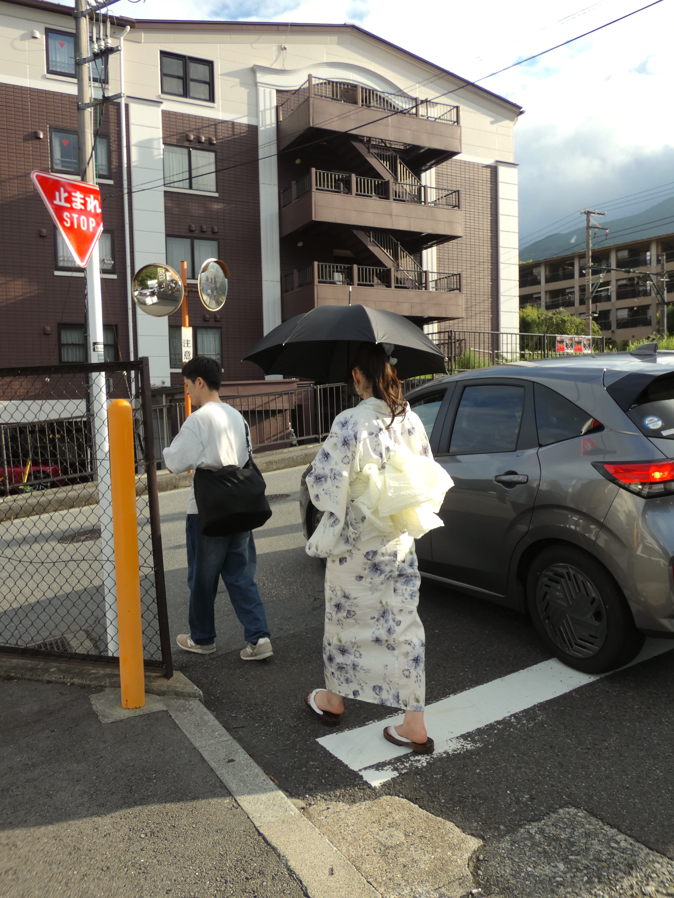
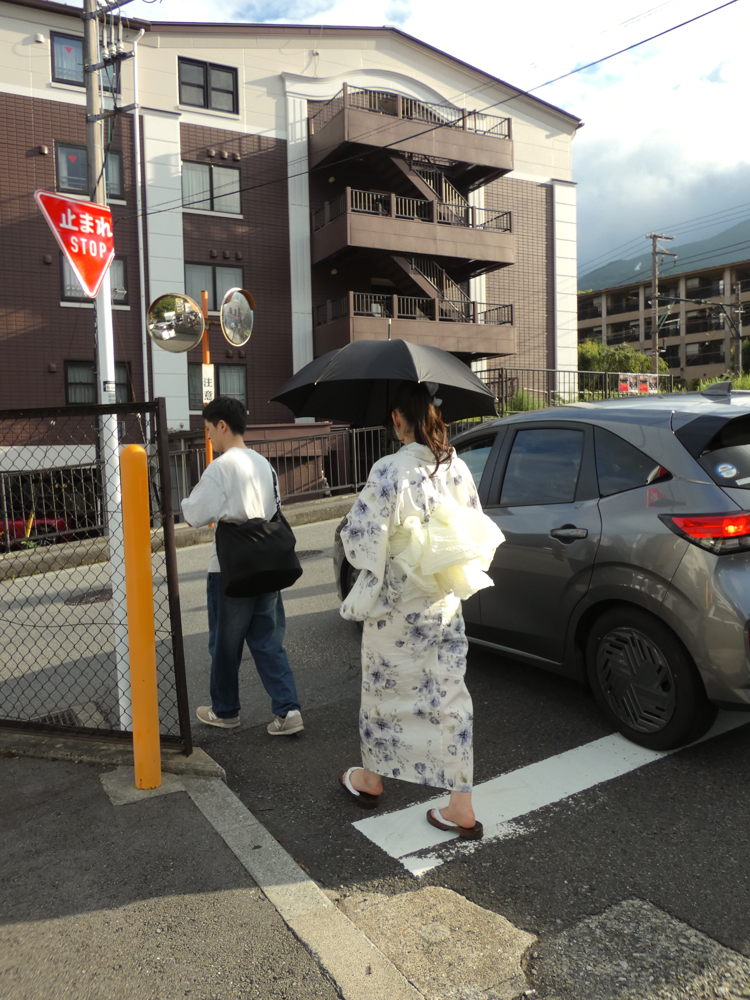
Japan Summer photography | Tokyo & Kyoto, 2025
Exploring Tokyo and Kyoto in the summer of 2025, I discovered a world where vibrant personalities meet breathtaking landscapes. This collection captures the essence of Japan’s culture, from its playful kawaii charm to its fashion forward streets, and from serene nature to dynamic city life, celebrating the beautiful diversity that makes this country truly unforgettable.
Shot on Panasonic Lumix DC-FZ82
photography

PFW Spring/Summer streetphotography | Paris 2024
On the streets of Paris, stylish individuals were photographed showcasing standout pieces, including select designs from Jenny Fax (@jennyfax.official). This photo series celebrates spontaneous fashion moments and captures the vibrant creative spirit of Paris Fashion Week.
Shot on Panasonic Lumix DC-FZ82